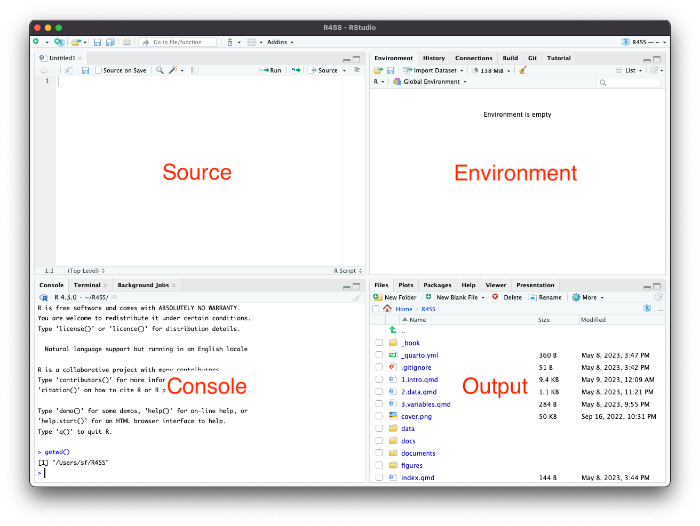
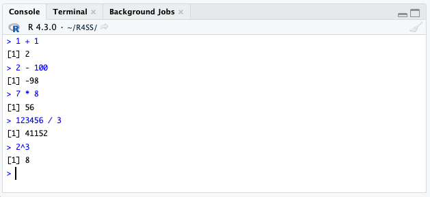
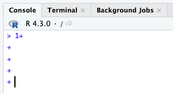
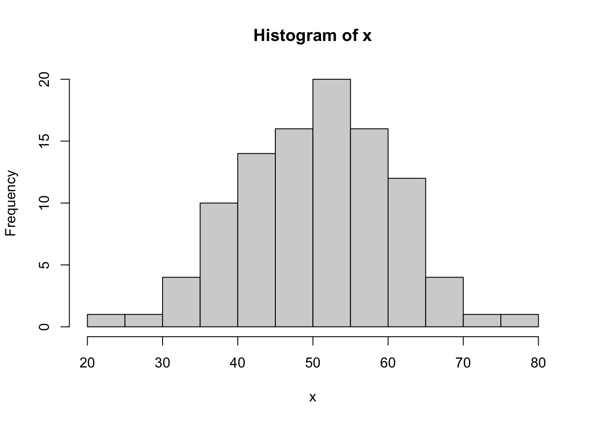
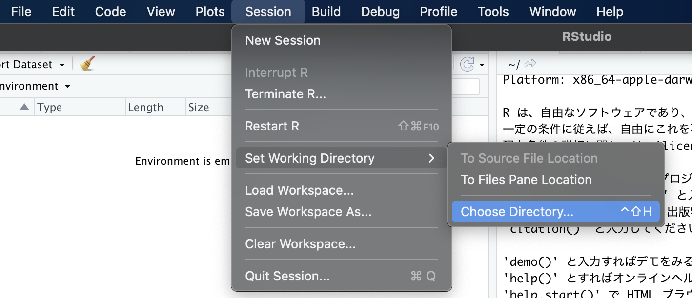
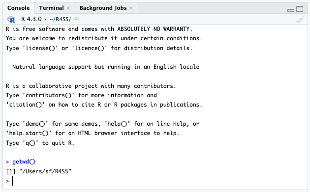
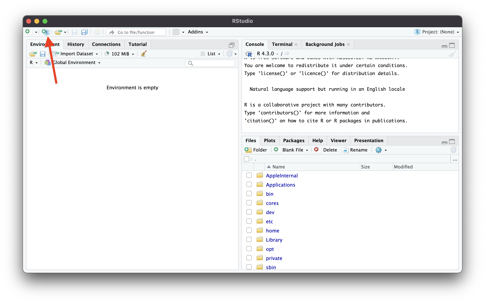
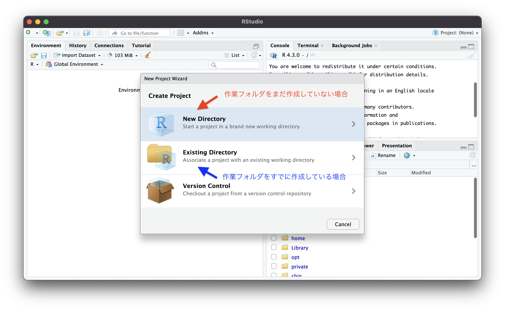
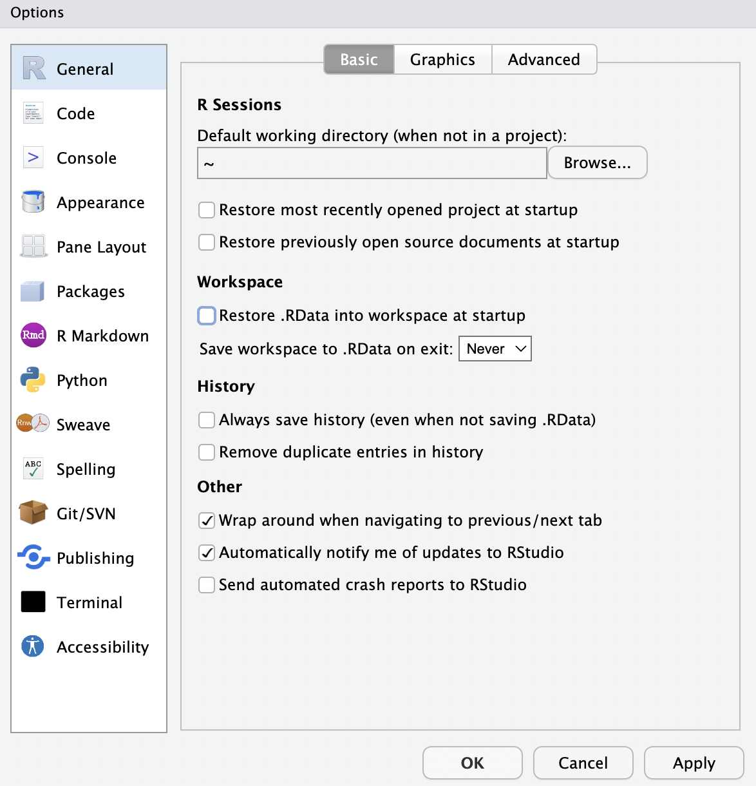

# 足し算
1 + 1
# 引き算
2 - 100
# 掛け算
7 * 8
# 割り算
123456 / 3
# 累乗
2^31 Rの基礎
1.1 RStudioの起動とpaneの設定
まずはRStudio（あるいはRStudio Cloud）を起動すると Figure 1.1 のような画面が表示される．

画面には次の4つの領域（pane）がある．
- 左上：Source pane．ここでスクリプト等を表示・編集する．ここにコードを入力する．
- 左下：Console pane．Consoleの他，Terminal, Background Jobsのタブがある．コンソールには結果が表示される．
- 右上：Environment pane．Environmentでは作成されたオブジェクトを確認できる．History，Connection，Built，Git，Tutorialなどのタブもある．
- 右下：Output pane．ここにはファイル，図，パッケージ，ヘルプなどが表示される．
paneについては一時的に縮小や拡大が可能であり，Figure 1.3 の赤で囲まれた枠でpaneの設定ができる．左上のEdit \(\rightarrow\) Preferences… \(\rightarrow\) Pane Layoutでも細かな設定が可能である．筆者は赤で囲まれた枠から「Console on Right」を選択し，右上にConsole paneが表示されるように設定している．
1.2 Rによる計算
コンソール上に Figure 1.3 のような四則演算を直接入力する．

するとすぐ下に結果が表示されるはずである．
簡単な計算はコンソール上で行ってもよいだろう．
[1]は何？
結果の左には常に[1]が表示されて気になるかもしれない．これは結果をベクトル（数字の列）で表示した時に，画面の一番左にある数字が何番目の要素であるかを示すものである．結果が1つしかない場合は，かならず1つ目の要素となるため[1]が表示される．
ESCを使う
計算の途中で改行すると Figure 1.4 のようになる． この場合ESCキーを押すことで>の状態に戻すことができる． 何かのミスで結果が表示されない場合などは，ESCで元の状態に戻して再度コードを検討する．

次は，Figure 1.5 の赤い四角の部分からソースにRスクリプトを作成する．
そして，Rスクリプト上に以下のコードを入力する．#（ハッシュ）はメモを作成するための記号であり，同じ行で#の後にくるものは実行されない．これをコメントアウトと呼ぶ．
ソースのタブでは，スクリプトは保存されていない状態だとUntitled1*のように表示されている．入力が終了したら名前をつけて保存する．ファイル名はdemo_1.Rのように拡張子.Rをつける．
保存したら，タブのすぐ下の欄にある「Source」のすぐ右から「Source with Echo」を選択するか（Rスクリプトすべてを実行），実行したい行か範囲を選択して「Run」を選択すれば（選択した範囲を実行），コンソール上に次のような結果が表示される．一度「Source with Echo」を選択すれば，後は「Source」を選択すれば，すべてのRスクリプト上のすべてのコードが実行される．
Rスクリプトのいち部を実行したい場合は，「Ctrl」+「Enter」（「command + Enter」）でカーソルの置かれている行を実行（わざわざコードを全部選択する必要はない）．同様の方法ですべてのコードを実行したい場合は，「Ctrl」+「A」+「Enter」（「command」+「A」+「Enter」）とすればよい．
# 足し算
1 + 1[1] 2# 引き算
2 - 100[1] -98# 掛け算
7 * 8[1] 56# 割り算
123456 / 3[1] 41152# 累乗
2^3[1] 8コンソールに入力すると記録には残らないので，Rスクリプトに入力しそれを実行するようにする．実際のところ分析の結果自体は保存して記録に残す必要はないといってもよい．分析のプロセスがRスクリプトに残っていれば，結果を何度でも再現できる．
#（ハッシュ）の使い方
#でコメントをマメに残す癖をつけておこう．コードを書いているときは理解できていても，時間が空くと何をやっているかを忘れてしまうことがよくある．すぐに作業を開始するためにもメモは残しておこう．また，他人にコードをチェックしてもらう際にもメモは重要である．
# 足し算
1 + 2[1] 31 + 2 # 足し算[1] 3# --------------------------
# 2023年5月9日
# --------------------------
# Rの基礎
# 足し算
1 + 2[1] 3では今度は関数（function）を使用してみる．関数は関数名()といった形となり，()の中に引数（argument）を指定する．引数は数値であったり，ベクトルであったり，データであったり，TRUEやFALSEやであったり，NULLであったり，文字であったりする．
# 平方根
sqrt(8)[1] 2.828427# 底が2の対数
log2(8)[1] 3# 底が2の対数 log()関数の引数にbase = 2 を加える
log(8, base = 2)[1] 3# 自然対数 log関数のデフォルトのbase = exp(1)
log(8)[1] 2.079442# 指数関数
exp(8)[1] 2980.958
引数の指定
sqrt(x = 8)のようにするのが正しいのかもしれないが，第1引数についてはsqrt(8)と省略されることが多い．log(8, base = 2)はlog(8, 2)としてもよいが，分かりにくいかもしれない．
数学の復習
累乗 (\(a^x\))，平方根 (\(\sqrt{x}\))，自然対数 (\(\log_e x\))，指数関数(\(e^x\))，\(e\)はネイピア数であり， \(e=2.718...\)．
1.3 ベクトル
社会調査データの分析では，人々によって異なる変数の分布（たとえば中心的な傾向やばらつきの程度）や変数間の関連を分析する．その時，変数は数値の列（ベクトル）として管理され，これを引数として関数で処理を行う．複数の数値を並べるためにはc（combineの略）を用い，カンマ,でつなぐ．
次のような4つのケースのある変数を考える．
\[\{1,2,2,3\}\]
Rでは次のように示される．
# ベクトル
c(1,2,2,3)[1] 1 2 2 3次のような変数の値は実際の調査で得られることはないが，IDとして使用できるだろう．
\[\{1,2,3,4,5,6,7,8,9,10,11,12,13,14,15,16,17,18\}\]
# 連続した値
1:18 [1] 1 2 3 4 5 6 7 8 9 10 11 12 13 14 15 16 17 18以下のような規則的な数字の列であった場合は，様々な関数を使用できる．
\[\{0,2,4,6,8,10\}\]
# 等差数列
seq(0,10,2) # 0から10まで2つずつ増加[1] 0 2 4 6 8 10\[\{1,1,1,1,1,1,1,1,1,1\}\]
# 繰り返し
rep(1,10) # 1を10個 [1] 1 1 1 1 1 1 1 1 1 1
関数のヘルプ
関数名は分かるがどのように引数を指定してよいかわからない場合やさらに何ができるのかを確認したい場合は，ヘルプを見てみよう． 例えば平均のmean()関数であれば?meanとする．また%in%のように特殊な表記については?"%in%"のように"で囲んだ上で?をつける．[]について調べたければ?"["のようにする．"は`でもよい．つまり，?`[`としてもよい．
単語をもとになにか調べたければhelp.search("mean")のようにする． 他にもRjpWiki，個人のサイトなど，日本語や英語で検索すると多くヒットする．教科書の索引で調べるのもよいだろう．
1.4 オブジェクト
値，データ，ベクトル，コメントなど様々なものをオブジェクトに代入できる．次のようにaというオブジェクトに4という値を代入してみる．
# aというオブジェクトに4を代入
a <- 4代入するだけでは何もでてこないので，aと入力して実行してみる．
# 結果を表示
a[1] 4すると先程代入された値が表示される．
では次に\(\{1,2,3,4,5,5\}\)というベクトルを代入してみる．
# bというオブジェクトに [1,2,3,4,5,5] というベクトルを代入
b <- c(1,2,3,4,5,5)
# 結果を表示
b[1] 1 2 3 4 5 5なおc，q，tは関数として，piははじめから組み込まれている定数として頻繁に使用されるためオブジェクトとしては使用しない．TRUEとFALSEの省略であるTとFも使用しないほうがよいだろう．C，D，Iも避けよう．
# piは3.141593
pi[1] 3.141593このようなベクトルをオブジェクトとし，それに対して関数を適用する．
1.5 Rによる変数の処理
平均50，標準偏差10の正規分布からランダムに100個のデータを取り出し，架空のデータを作成する． データはrnorm()関数にn = 100，mean = 50，sd = 10を指定することで作成できる． そのデータについてはxというオブジェクトに代入しておく．
# 平均50，標準偏差10の正規分布からランダムに100個のデータを取り出す
# 再現のため乱数を指定
set.seed(123456)
x <- rnorm(n = 100, mean = 50, sd = 10)
x [1] 58.33733 47.23952 46.44998 50.87487 72.52256 58.34460 63.12416 75.02645
[9] 61.68232 45.73834 40.03870 38.86050 49.44268 61.74432 60.53219 50.57606
[17] 42.64957 59.30528 66.68211 55.59688 42.46025 62.56554 50.38493 51.89540
[25] 54.62595 45.72637 50.16586 57.04879 59.71849 43.79508 41.44133 50.69558
[33] 39.53802 22.51132 38.70140 41.38315 65.60074 60.15088 60.43994 38.84095
[41] 39.28696 59.67821 51.71033 41.03750 51.58289 44.98052 40.34077 48.86266
[49] 60.85950 37.88352 32.32278 45.08308 53.21466 64.60661 65.37243 46.60431
[57] 39.22551 35.09235 47.47253 48.78077 43.51017 53.13076 51.22811 41.63160
[65] 56.00422 47.54065 48.15335 50.23157 45.15348 42.62094 63.02508 55.64499
[73] 31.94956 54.38339 35.58911 59.52829 42.77018 50.48760 34.36468 26.97634
[81] 61.57964 42.95265 34.26178 55.18352 39.35069 50.47054 58.48047 54.32678
[89] 55.22805 47.46114 45.03148 62.60101 55.64980 46.55362 57.24810 58.64092
[97] 53.69247 65.83596 50.60370 51.28711図も関数を用いることで描くことができる．hist()関数はヒストグラムを作成する．
# ヒストグラム
hist(x)
次のように様々な関数を利用して，値を計算してみる．
\[ \sum_{i=1}^n x. \]
# 総和
sum(x)[1] 5016.82\[ \bar x = \frac{1}{n}\sum_{i=1}^n x. \]
# 平均値
mean(x)[1] 50.1682値を丸めたければround()関数を使用する．小数点以下の桁数はdigitsで指定できる．まず，平均値を求めmean_xというオブジェクトに代入する．それにround()関数を適用する．
# 平均値を求めmean_xというオブジェクトに代入する
mean_x <- mean(x)
# mean_xというオブジェクトに対してround()関数を適用する．
round(mean_x, digits = 1)[1] 50.2mean_xを使用せず，次のようにしてもよい．
# まとめて実行する
round(mean(x), digits = 1)[1] 50.2ただし計算のプロセスが見えにくいかもしれないので，後に説明するパイプ演算子を利用することが推奨される．
- 中央値
# 中央値
median(x)[1] 50.47907- 不偏分散
\[ \frac{1}{n-1}\sum_{i=1}^n \left(x - \bar x \right). \]
# 不偏分散
var(x)[1] 98.70409- 標準偏差
\[ \sqrt{\frac{1}{n-1}\sum_{i=1}^n \left(x - \bar x \right)}. \]
# 標準偏差
sd(x)[1] 9.934993- 最大値と最小値
# 最大値
max(x)[1] 75.02645# 最小値
min(x)[1] 22.51132- サンプルサイズ
# 大きさ
length(x)[1] 100
length()関数についての注意点
欠損値がある場合には，観察されたケースのサイズをlength()関数を用いて示してはいけない．もし欠損値のないケースのサイズについて知りたければsum(!is.na(x))とする．使用頻度が多い場合には，次のようにcomplete_obs()関数を作成するのがよい．
# xをコピー
x_mis <- x
# 10から20番目の要素をNAとする
x_mis[10:20] <- NA
# 欠損を含むデータの表示
x_mis [1] 58.33733 47.23952 46.44998 50.87487 72.52256 58.34460 63.12416 75.02645
[9] 61.68232 NA NA NA NA NA NA NA
[17] NA NA NA NA 42.46025 62.56554 50.38493 51.89540
[25] 54.62595 45.72637 50.16586 57.04879 59.71849 43.79508 41.44133 50.69558
[33] 39.53802 22.51132 38.70140 41.38315 65.60074 60.15088 60.43994 38.84095
[41] 39.28696 59.67821 51.71033 41.03750 51.58289 44.98052 40.34077 48.86266
[49] 60.85950 37.88352 32.32278 45.08308 53.21466 64.60661 65.37243 46.60431
[57] 39.22551 35.09235 47.47253 48.78077 43.51017 53.13076 51.22811 41.63160
[65] 56.00422 47.54065 48.15335 50.23157 45.15348 42.62094 63.02508 55.64499
[73] 31.94956 54.38339 35.58911 59.52829 42.77018 50.48760 34.36468 26.97634
[81] 61.57964 42.95265 34.26178 55.18352 39.35069 50.47054 58.48047 54.32678
[89] 55.22805 47.46114 45.03148 62.60101 55.64980 46.55362 57.24810 58.64092
[97] 53.69247 65.83596 50.60370 51.28711# 欠損値を含むサイズ
length(x_mis)[1] 100# 欠損値を除いたサイズ
sum(!is.na(x_mis))[1] 89# 欠損値をた観察ケースサイズを求める関数を作成する
complete_obs <- function(x) sum(!is.na(x))
complete_obs(x)[1] 100length()関数を使用する際は注意しよう．データフレームの行のサイズをnrow()関数で求め，それをサンプルサイズとして用いることもあるが，これも欠損値については考慮していないことに注意が必要である．
- 四分位数
# 四分位数
quantile(x) 0% 25% 50% 75% 100%
22.51132 42.74002 50.47907 58.33915 75.02645 - 要約
summary()関数を数値に適用すると，平均と四分位数を同時に示す．
# 要約
summary(x) Min. 1st Qu. Median Mean 3rd Qu. Max.
22.51 42.74 50.48 50.17 58.34 75.03
注意点
varとsdは \(n\) ではなく \(n-1\) で割ったものであることに注意．
1.6 パッケージ
Rでは分析などの機能をひとつのパッケージとしてまとめている．RStudioの右下のOutput paneの「Packages」のタブからパッケージはインストール可能である．またはinstall.packages("パッケージ名") と入力しても良い．install.packages("パッケージ名", dependencies = TRUE)のようにdependencies = TRUEはつけておいたほうがよい．
# 以下をコンソールに貼り付ければ，インストールされる（ただし時間がかかる）
install.packages("tidyverse", dependencies = TRUE) # データの整理
install.packages("haven", dependencies = TRUE) # データの読み込み
install.packages("janitor", dependencies = TRUE) # データの変換
install.packages("here", dependencies = TRUE) # プロジェクト内のファイルを表示
install.packages("fs", dependencies = TRUE) # フォルダの作成これまでの作業はインストールだけであり，そのままではパッケージの関数などは利用できない．パッケージを使用したい場合はlibrary(パッケージ名)で呼び出す必要がある．これはRStudioを閉じて再度立ち上げたら必要な作業なので，スクリプトに書いておく．
library(tidyverse) # データの整理── Attaching core tidyverse packages ──────────────────────── tidyverse 2.0.0 ──
✔ dplyr 1.1.2 ✔ readr 2.1.4
✔ forcats 1.0.0 ✔ stringr 1.5.0
✔ ggplot2 3.4.2 ✔ tibble 3.2.1
✔ lubridate 1.9.2 ✔ tidyr 1.3.0
✔ purrr 1.0.1
── Conflicts ────────────────────────────────────────── tidyverse_conflicts() ──
✖ dplyr::filter() masks stats::filter()
✖ dplyr::lag() masks stats::lag()
ℹ Use the conflicted package (<http://conflicted.r-lib.org/>) to force all conflicts to become errorslibrary(haven) # データの読み込み
library(janitor) # 度数分布表
Attaching package: 'janitor'
The following objects are masked from 'package:stats':
chisq.test, fisher.testlibrary(here) # プロジェクト内のファイルを表示here() starts at /Users/sf/GitHub/R4SSlibrary(fs) # ファイルの作成なおインストールされているパッケージについてはOutput paneの「Packages」のタブか .packages(all.available=TRUE)と入力することで確認できる．
以上の作業をまとめて行いたい場合，pacmanパッケージのp_load()関数を用いる．
# pacmanパッケージがインストールされていない場合は以下からインストールを実行
#install.packages("pacman")
# パッケージのインストール（もしインストールされていなければ）と呼び出し
pacman::p_load(tidyverse,
haven,
janitor)
パッケージ名::関数名
複数のパッケージで同じ関数名を使用することがある．そのため，意図しているパッケージの関数とは異なるを用いてしまったり，
1.7 パイプ演算子
通常は関数(引数)として入力されるが，パイプ処理では引数 |> 関数()のようにパイプの左側の結果をパイプ右側に配置した関数の最初の引数（第1引数）に適用できる． 更に|>を複数つなげてデータ |> 関数() |> 関数() のようにできるため，どのような処理を行ったかが分かりやすい形でコードが整理される．
# 総和
x |> sum()[1] 5016.82# 平均値
x |> mean()[1] 50.1682# 平均値を丸める
x |> mean() |> round(digits = 1)[1] 50.2# 中央値
x |> median()[1] 50.47907# 不偏分散
x |> var()[1] 98.70409# 標準偏差
x |> sd()[1] 9.934993# 最大値
x |> max()[1] 75.02645# 最小値
x |> min()[1] 22.51132# 大きさ
x |> length()[1] 100# 四分位数
x |> quantile() 0% 25% 50% 75% 100%
22.51132 42.74002 50.47907 58.33915 75.02645 # 要約
x |> summary() Min. 1st Qu. Median Mean 3rd Qu. Max.
22.51 42.74 50.48 50.17 58.34 75.03
2つのパイプ演算子
パイプ演算子はもともとmagrittrパッケージの%>%という演算子のことを示していた．しかし，R4.1+では|>が標準で組み込まれている（ネイティブパイプと呼ばれる）．したがって|>を使用するのにmagrittrパッケージを呼び出す必要はない．実際は%>%のほうが分かりやすく，使用しやすい場面もある．なお，パイプ演算子のショートカットキーは \(\uparrow\) +「Command」+「m」である．
library(magrittr)
Attaching package: 'magrittr'The following object is masked from 'package:purrr':
set_namesThe following object is masked from 'package:tidyr':
extractx %>% mean()[1] 50.1682x |> mean()[1] 50.16821.8 作業ディレクトリを作成する
データ，スクリプト，作成した図表，先行研究，資料，執筆した論文などをひとつのフォルダの中にまとめておこう．このようなあるプロジェクトに関連するファイルが含まれたフォルダを作業ディレクトリ（Working Directory）と呼ぶ．例えばここではR4SSという名前のフォルダを作成する．中身はひとまずはからのままでもよい．
R4SSというフォルダを作成しても，RにはR4SSフォルダは作業ディレクトリとしては認識していない．
「Session」\(\rightarrow\)「Set Working Directory」\(\rightarrow\)「Choose Directory…」を選択し，R4SSフォルダを探して選択し，「Open」を選択することによって， R4SSが作業ディレクトリとしては認識される．

以下のコードを入力し，指定したフォルダが作業ディレクトリとして認識されているかどうかを確認してみよう．

getwd()[1] "/Users/sf/GitHub/R4SS"基本的にはRStudioを起動するたびに作業ディレクトリを指定する必要がある． しかし，以下で説明するプロジェクトを指定する作業を一度行ってしまえば，その作業の必要はない．
1.9 プロジェクトの作成
Figure 1.6 のように左上のアイコンからプロジェクトを作成しよう．すでにR4SSという名前のフォルダを作成されているという前提で手順を説明する．

Figure 1.7 のように，新規でディレクトリ（New Directory）を作成するのか，すでにあるディレクトリ（Existing Directory）を使うのかをたずねられるので，ここではすでにあるディレクトリを使用する．「Browse」を選択し，作業ディレクトリを選択したら「Open」を選択する．「Projecto working directory:」の欄にパスが記入された状態になるので，「Create Project」を選択する．

すると，R4SSというフォルダの中にR4SS.Rprojというファイルが作成される．このように，プロジェクトファイル（R4SS.Rprojのように.Rprojという拡張子のファイル）を作業ディレクトリに作成しておけば，.Rprojファイルをクリックすると自動的にファイルのある場所が作業ディレクトリとして指定される．確認の方法は複数ある．
- Consoleペインのタブのすぐ下に作業ディレクトリが表示されているか．
- Filesペインの右側のプロジェクトのアイコンをクリックすると作業ディレクトリの中身がFilesの中に表示されているか．
getwd()関数を実行する．hereパッケージのhere()関数を用いる．
# 作業ディレクトリの確認
getwd()[1] "/Users/sf/GitHub/R4SS"hereパッケージのhere()関数を用いる．
# 作業ディレクトリの確認
here()[1] "/Users/sf/GitHub/R4SS"1.10 フォルダの整理
dir_create()関数でファイルを作成する．ファイルの作成場所にhere()とすれば作業ディレクトリにファイルが作成されるので，here(c("フォルダ1", "フォルダ2",...))のようにすれば，作業ディレクトリにフォルダ1，フォルダ2，．．．のようにファイルが作成される．
次のコードによって，作業ディレクトリにscripts，figures，tables，documents，manuscriptsというフォルダを作成する．
dir_create(here(c("scripts", # Rスクリプトを保存
"figures", # 図を保存
"tables", # 表を保存
"documents", # 先行研究や資料を保存するフォルダ
"manuscripts" # 原稿を保存
)))dataというフォルダには未加工のデータを保存するフォルダrawと処理済みのデータを保存するフォルダprocessedの2つを準備したい．here()関数の第1引数を"data"とし第2引数を"raw"として，dir_create()関数を適用する．
順番に確認していこう．作業ディレクトリのdataというフォルダのrawというフォルダはhere("data", "raw")で，作業ディレクトリのdataというフォルダのprocessedというフォルダはhere("data", "processed")で指定できる．
here("data", "raw")[1] "/Users/sf/GitHub/R4SS/data/raw"here("data", "processed")[1] "/Users/sf/GitHub/R4SS/data/processed"これはパスを書いただけなので，dir_create()関数でフォルダを作成する．
dir_create(here("data", "raw")) # データを保存（生データ）
dir_create(here("data", "processed")) # データを保存（処理したデータ）次のようなフォルダが作成されていれば作業完了である．
R4SS：作業ディレクトリdata：データを保存するフォルダprocessed：加工したデータを保存するフォルダraw：加工前の生データを保存するフォルダ
scripts：Rスクリプトを保存するフォルダfigures：図を保存するフォルダtables：表を保存するフォルダdocuments：先行研究や資料を保存するフォルダmanuscripts：原稿を保存するフォルダ
先程保存したRスクリプトはscriptsフォルダ内に移動しておこう．
1.11 ファイルの場所を表示する
u001.csvの場所は，../R4SS/data/u001.csvのようになっている． here()をつかって表示してみよう．
# u001.csvの場所の表示
here("data", "raw", "u001.csv")[1] "/Users/sf/GitHub/R4SS/data/raw/u001.csv"1.12 Rの終了
Rスクリプトを保存して終了すればよい．個人的には作業スペースの保存は必要ないと考えるので，Save Workspace…などとたずねられても，Noとする．Figure 1.8 で，「Restore .RData into workspace at startup」のチェックは外し，「Save Workspace to .RDta on exit:」も「Never」としておこう．
